소방시설관리사 (2020-05-16 기출문제)
1과목: 방안전관리론
1. K급 화대(주방화재)에 관한 설명으로 옳지 않은 것은?
- 비누화현상을 일으키는 중탄산나트륨 성분의 소화약제가 적응성이 있다.
- 인화점과 발화점의 차이가 작아 재발화의 우려가 큰 식용유화재를 말한다.
- 주방에서 동식물유를 취급하는 조리기구에서 일어나는 화재를 말한다.
- K급 화재용 소화기의 소화능력시험은 소화기의 B급 화재 소화능력시험에 따른다.
(정답률: 65%)

2. 일반화재(A급 화)에 물은 소화약제로 사용할 경우 분무상으로 방수 할 때 증대되는 소화효과는?
- 부촉매효과
- 억제효과
- 냉각효과
- 류화효과
(정답률: 72%)
3. 25℃의 물 200L를 대기압에서 가열하여 모두 기화시켰을 때 물의 흡수량은 몇 kJ인가? (단, 물의 비열은 4.18kJ/kg∙℃, 증발잠열은 2,255.5kJ/kg이며, 기타 조건은 무시한다.)
- 107,920
- 342,000
- 451,100
- 513,800
(정답률: 46%)
4. 제3종 분말소화약제가 열분해 될 때 생성되는 물질이 아닌 것은?
- NH3
- CO2
- HPO3
- H2O
(정답률: 62%)
5. 고체가연물의 점화 (발화)시간은 물체의 두께와 밀접한 관계가 있는데, 열적으로 얇은 고체가연물(두께가 약 2㎜ 미만)의 경우 점화시간 계산 시 주요 영향요소가 아닌 것은?
- 열전도도(W/m∙K)
- 정압비열(J/kg∙K)
- 순열유속(W/m2)
- 밀도(kg/m3)
(정답률: 44%)
6. 분진폭발의 특징으로 옳지 않은 것은?
- 열분해에 의해 유독성 가스사 발생될 수 있다.
- 폭발과 관련된 연소속도 및 폭발압력이 가스폭발에 비해 낮다.
- 1차 폭발로 인해 2차폭발이 야기될 수 있어 피해 범위가 크다.
- 가스 폭발에 비해 발생 에너지가 적고 상대적으로 저온이다.
(정답률: 46%)
7. 가연성 액체의 화재발생 위험에 관한 설명으로 옳은 것은?
- 인화점, 발화점이 높을 수록 위험하다.
- 연소범위가 좁을 수록 위험하다.
- 증기압이 높고 연소속도가 빠를수록 위험하다.
- 증발열, 비열이 클수록 위험하다.
(정답률: 62%)
8. 다음과 같은 특성을 모두 가진 연소 형태는?
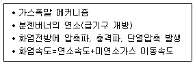
- 표면연소
- 확산연소
- 예혼합연소
- 자기연소
(정답률: 55%)
9. 초고층 및 지하연계 복합건축물 재난관리에 관한 특별법령에서 정한 피난안전 구역에 설치하여야 하는 소방시설이 아닌 것은?
- 소화기 및 간이 소화용구
- 자동화재속보설비
- 비상조명등 및 휴대용비상조명등
- 자동화재탐지설비
(정답률: 61%)
10. 내화구조 건축물의 내화성능 요구조건에 해당하지 않은 것은?
- 차연성
- 차열성
- 차염성
- 하중지지력
(정답률: 47%)
11. 피난계획의 일반적인 원칙으로 옳지 않은 것은?
- 건물내 임의의 지점에서 피난 시 한 방향이 화제로 사용이 불가능하면 다른 방향으로 사용되도록 한다.
- 피난수단은 보행에 의한 피난을 기본으로 하고 인간본능을 고려하여 설계한다.
- 피난경로는 굴곡부가 많거나 갈림길이 생기지 않도록 간단하고 명료하게 설계한다.
- 피난경로의 안전구획을 1차로 계단, 2차는 복도로 설정한다.
(정답률: 62%)
12. 건축물의 피난∙방화구조 등의 기준에 관한 규칙에서 소방관 진입창의 기준으로 옳지 않은 것은?
- 2층 이상 11층 이하인 층에 각각 1개소 이상 설치 할 것
- 창문의 한쪽 모서리에 타격지점을 지름 3센티미터 이상의 원형으로 표시 할것
- 강화 유리 또는 배강도유리로서 그 두께가 6밀리미터 이상인 것
- 창문의 가운데에 지름 20센티미터 이상의 역삼각형을 야간에도 알아볼 수 있도록 빛반사 등으로 붉은색으로 표시할 것
(정답률: 50%)
13. 다중이용업소의 안전관리에 관한 특별법령상 다중이용업소에 설치∙유지하여야 하는피난설비에서 피난기구가 아닌 것은?
- 피난사다리
- 피난유도선
- 구조대
- 완강기
(정답률: 50%)
14. 구획실 화재에서 화재가혹도에 관한 설명으로 옳지 않은 것은?
- 화재가혹도는 최고온도의 지속시간으로 화재가 건물에 피해를 입히는 능력의 정도를 나타낸다.
- 화재가혹도는 화재하중과 화재강도로 구성되며, 화재강도는 단위면적당 가연물의 양으로 계산한다.
- 화재가혹도를 낮추기 위해서는 가연물을 최소단위로 저장하고 불연성 밀폐용기에 보관한다.
- 화재가혹도에 견디는 내력을 화재저항이라고 하며 건축물의 내화구조, 방화구조 등을 의미한다.
(정답률: 46%)
15. 바닥면적이 300m2인 창고에 목재 1,000kg과 기타 가연물 1,000kg이 적재되어 있는 경우 화재하중(kg/m2)은 얼마인가? (단, 목재의 단위발열량은 4,500kcal/kg, 기타 가연물의 단위발열량은 5,000kJ/kg이며, 소수점 이하 셋째자리레에서 반올림한다.)
- 2.11
- 4.22
- 7.04
- 14.08
(정답률: 34%)
16. 화재 시 인간의 피난행동 특성에 관한 설명으로 옳지 않은 것은?
- 처음에 들어온 빌딩 등에서 내부 상황을 모를 경우 들어왔던 경로로 피난하려는 본능을 귀소본능이라 한다.
- 건물내부에 연기로 인해 시야가 제한을 받을 경우 빛이 새어나오는 방향으로 피난하려는 본능을 지광본능이라 한다.
- 열린 느낌이 드는 방향으로 피난하려는 경향을 직진성이라 한다.
- 안전하다고 생각되는 경로로 피난하려는 경향을 이성적 안전지향성이라 한다.
(정답률: 53%)
17. 건축물의 피난∙방화구조 등의 기준에 관한 규칙에서 정한 건축물의내부에 설치하는 피난계단의 구조의 기준으로 옳지 않은 것은?
- 계단실은 창문ㆍ출입구 기타 개구부를 제외한 당해 건축물의 다른 부분과 내화구조의 벽으로 구획할 것
- 건축물의 내부와 접하는 계단실의 창문등(출입구를 제외한다)은 망이 들어 있는 유리의 붙박이창으로서 그 면적을 각각 1제곱미터 이하로 할 것
- 건축물의 내부에서 계단실로 통하는 출입구의 류효너비는 0.9미터 이상으로 할 것
- 계단실의 바깥쪽과 접하는 창문등은 당해 건축물의 다른 부분에 설치하는 창문등으로 부터 1미터 이하의 거리를 두고 설치할 것
(정답률: 42%)
18. 가로 50㎝, 세로 60㎝인 벽면의 양쪽 온도가 350℃와 30℃이고, 벽을 통한 이동열량이 250W일 때 이 벽의 두께 t(m)는? (단, 열전도도는 0.8W/m∙K이고 기타 조건은 무시하며, 소수점 이하 섯째자리에서 반올림한다.)
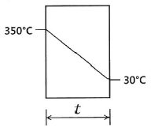
- 0.31
- 0.45
- 0.64
- 0.78
(정답률: 39%)
19. 아레니우스(Arrhenius)의 반응속도식에 관한 설명으로 옳은 것은?
- 활설화에너지가 클수록 반응속도는 증가한다.
- 기체상수가 클수록 반응속도는 증가한다.
- 온도가 높을수록 반응속도는 감소한다.
- 가연물의 밀도가 높을수록 반응속도는 증가한다.
(정답률: 37%)
20. 구획실에서 화재의 지속시간에 관한 설명으로 옳지 않은 것은?
- 화재실 단위면적당 가연물의 양에 비례한다.
- 화재실 바닥 면적에 비례한다.
- 화재실 개구부 면적에 비례한다.
- 화재실 개구부 높이의 제곱근에 반비례한다.
(정답률: 35%)
21. 에탄올(C2H5OH) 1kmol을 완전 연소하는데 필요한 이론적인 산소(O2)의 제적(m3)은?
- 67.2
- 69.4
- 70.6
- 74.0
(정답률: 39%)
22. 연소생성물질의 특성에 관한 설명으로 옳지 않은 것은?
- 일산화탄소(CO)는 불연성 기체로서 호흡률을 높여 독성가스 흡입을 증가시킨다.
- 아크롤레인(CH2CHCHO)은 석유류 제품 및 유지(기름)성분의 물질이 연소할 때 발생한다.
- 황화수소(H2S)는 계란 썩은 것 같은 냄새가 난다.
- 염화수소(HCl)는 PVC 등 염소함유물질이 연소할 때 생성된다.
(정답률: 44%)
23. 한클리(Hinkley)의 연기하강시간(t)에 관한 식으로 옳은 것은? (단, t는 연기의 하강시간(s), A는 바닥면적(m2), Pf는 화재둘레(m), g는 중력가속도(m/s2), H는 층고(m), Y는 청결층 높이(m) 이다.)
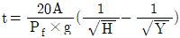
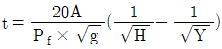
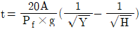
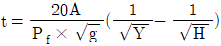
(정답률: 44%)
24. 고층건묵물의 화재 시 굴뚝효과(Stack effect)에 의한 샤프트와 외기의 압력차에 관한 설명으로 옳은 것은?
- 외기 온도가 높을수록 감소한다.
- 샤프트 내부 온도가 높을수록 감소한다.
- 중성대(면) 위의 거리가(높이)가 클수록 감소한다.
- 샤프트 내부와 외기의 온도차가 클수록 감소한다.
(정답률: 47%)
25. 연기농도와 피난한계에 관한 설명으로 옳지 않은 것은? (단, Cs는 감광계수이다.)
- 반사형 표지 및 문짝의 가시거리(L)는
 이다.
이다. - 발광형 표지 및 주간 창의 가시거리(L)는
 이다.
이다. - 가시거리(L)와 감광셰수 (Cs)는 비례한다.
- 감광계수(Cs)는 입사된 광량에 대한 투과된 광량의 감쇄율로, 단위는 m-1이다.
(정답률: 56%)
2과목: 소방수리학·약제화학 및 소방전
26. 단위질량당 체적을 나타내는 용어는?
- 밀도
- 비중
- 비체적
- 비중량
(정답률: 47%)
27. 지름 50㎜의 관에 20℃의 물이 흐를 경우 한계유속(㎝/sec)은 얼마인가? (단, 수온 20℃에서의 동점성계수는 1×10-2stokes이고 한계레이놀드수(Re)는 2,000이다.)
- 2
- 4
- 8
- 10
(정답률: 31%)
28. 그림과 같이 안지름 600㎜의 본관에 안지름 200㎜인 벤츄리미터가 장지되어 있다. 압력수두차가 2m이면 유량(m3/sec)은 약 얼마인가? (단, 유량계수는 0.98이다.)
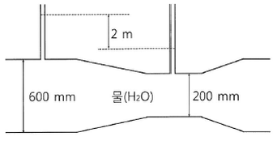
- 0.148
- 0.164
- 0.188
- 0.194
(정답률: 27%)
29. 지름 2m인 원형 수조의 측벽 하단부에 지름 50㎜의 구멍이 있다. 이 수조의 수위를 50㎝이상으로 유지하기 위해서 수조에 공급해야 할 최소 유량(cm3/sec)은 약 얼마인가? (단, 유출구에서의 유량계수는 0.75이다.)
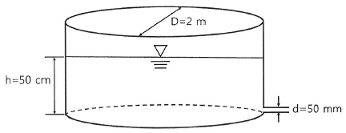
- 4,610
- 6,140
- 7,370
- 8,190
(정답률: 29%)
30. 펌프의 축동력이 26.4kW, 기계의 손실동력이 4kW인 송수펌프가 있다. 이송수 펌프의 기계효율(ηm)은 약 얼마인가?
- 0.65
- 0.75
- 0.85
- 0.95
(정답률: 45%)
31. 유적선에 관한 설명으로 옳은 것은?
- 어느 한순간에 주어진 유체입자의 흐름방향을 나타낸 것이다.
- 흐름을 직각으로 끊는 횡단면적을 말한다.
- 유체입자의 실제 운동 경로를 말하며, 경우에 따라 유선과 일치할 수 있다.
- 단위사간에 그 단면을 통과하는 물의 용적이다.
(정답률: 44%)
32. 비중 0.93인 물체가 해수면 위에 떠있다. 이 물체가 해수면 위로 나온 부분의 체적이 200cm3일 때, 물속에 잠긴 부분의 체적(cm3)은 멀마인가? (단, 해수의 비중은 1.03이다.)
- 1,860
- 2,060
- 2,260
- 2,460
(정답률: 28%)
33. 베르누이 방정식에 관한 설명으로 옳지 않은 것은?
- 에너지 방정식이라고도 한다.
- 에너지 보존법칙을 유체의 흐름에 적용한 것이다.
- 동수경사선은 위치수도와 압력수두를 합한 선을 연결한 것이다.
- 적용조건은 이상유체, 정상류, 비압축성 흐름, 점성 흐름이다.
(정답률: 44%)
34. 펌프의 비속도(Ns)에 관한 설명으로 옳지 않은 것은?
- 토출량과 양정이 동일한 경우 회전수가(N) 낮을수록 비속도가 커진다.
- 임펠러의 상사성과 펌프의 특성 및 펌프의 형식을 결정하는데 이용되는 값이다.
- 양흡입 펌프의 경우 토출량의 1/2로 계산한다.
- 회전수와 양정이 알정할 때 토출량이 클수록 비속도가 커진다.
(정답률: 33%)
35. 포소화약제 포원액의 비중기준으로 옳은 것은?
- 단백포소화약제: 0.90 이상 2.00 이하
- 합성계면활성제 포소화약제: 1.10 이상 1.20 이하
- 수성막포소화약제: 1.00 이상 1.15 이하
- 알콜형포소화약제: 0.60 이상 1.20 이하
(정답률: 28%)
36. 소화약제에 관한 설명으로 옳지 않은 것은?
- 제1종 분말소화약제에 탄산마그네슘 등의 분산제를 첨가해서 유동성을 향상시킨다.
- 포소화약제 중 수성막포의 팽창비는 6배 이상, 기타 포소화약제의 팽창비는 5배 이상이다.
- 물 소화제에 증점제를 첨가하여 가연물에 대한 물의 잔류시간을 길게 한다.
- 물의 증발잠열은 약 539kcal/kg이다.
(정답률: 40%)
37. 할로겐화합물 소화약제의 최대허용설계농도가 큰 순서대로 나열한 것은?
- HCFC-124 ＞ HFC-125 ＞ IG-100 ＞ HFC-23
- HFC-23 ＞ HCFC-124 ＞ HFC-125 ＞ IG-100
- IG-100 ＞ HFC-23 ＞ HFC-125 ＞ HCFC-124
- IG-100 ＞ HFC-125 ＞ HCFC-124 ＞ HFC-23
(정답률: 37%)
38. 표준상태에서 한계산소농도가 가장 큰 가연성 물질은?
- 메탄
- 수소
- 에틸렌
- 일산화탄소
(정답률: 24%)
39. 온도변화 없이 밀폐된 공간에 산소 22vol%, 질소 79vol%인 공기 353ft3이 가득 차 있다. 이 공간에 순수한 이산화탄소가 417ℓ가 방출될 때, 이산화탄소 농도(vol%)는? (단, 1ft=0.3048m이다.)
- 2
- 3
- 4
- 6
(정답률: 30%)
40. 분말소화약제에 관한 설명으로 옳지 않은 것은?
- 제3종 분말소화약제는 제1종과 제2종에 비해 낮은 온도에서 열분해 한다.
- 제2종 분말소화약제의 구성성분이 제1종보다 반응성이 커서 소화능력이 우수하다.
- 분말소화약제는 작열연소보다 불꽃연소에 소화효과가 우수하다.
- 제1종 분말소화약제가 590℃이상에서 분해될 때 Na2O가 생성된다.
(정답률: 34%)
41. 할로겐화합물 및 불활성기체소화설비의 화재안전기준상 할로겐화합물 소화약제 저장용기의 설치 기준으로 옳은 것은?
- 저장용기를 방호그역 내에 설치한 경우에는 방화문으로 구획된 실에 설치할 것
- 용기간의 간격은 점검에 지장이 없도록 3㎝이상의 간격을 유지할 것
- 온도가 65℃ 이하이고 ㄷ온도 변화가 작은 곳에 설치한 것
- 하나의 방호구역을 담당하는 경우에는 저장용기와 집합관을 연결하는 연결배관에는 체크밸브를 설치할 것
(정답률: 36%)
42. 할로겐화합물 및 불활성기체소화설비의 화재안전기준상 저장용기의 최대충전밀도가 가장 큰 것은?
- FK-5-1-12
- FC-3-1-10
- HCFC BLEND A
- HCFC-124
(정답률: 24%)
43. 다음 그림은 값 3A의 전류 파형이다. 이 파형을 표현한 수식으로 옳지 않은 것은?
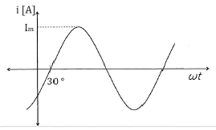
- i=3sin (ωt-30°)
- i=3∠-30
- i=2.6-j1.5
- i=3e-j30
(정답률: 37%)
44. 전계 내에서 전하 사이에 작용하는 힘, 전계, 전위를 표현한 식으로 옳지 않은 것은? (단, F: 힘, Q: 전하, r: 거리, V: 전위, K: 비례상수, E: 전계)
- F=QE[N]
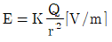
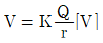
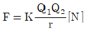
(정답률: 27%)
45. 그림과 같이 전류가 흐를 때, 미소길이(dℓ) 0.1m인 전선의 일부에서 발생한 자속이 P점에서 측정한 자기장의 세기 dH(AT/m)는 약 얼마인가? (단, π=3.14이다.)
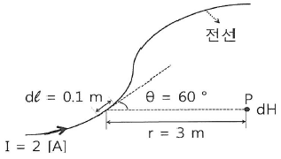
- 1.732×10-3
- 1.532×10-3
- 1.414×10-3
- 1.212×10-3
(정답률: 18%)
46. 다음 회로에서 10Ω의 저항에 흐르는 전류 I(A)는?
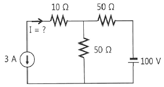
- 3
- 1.5
- -1.5
- -3
(정답률: 27%)
47. 다음 무접점 논리회로의 출력을 표현한 진리표의 내용이 옳게 작성된 것은?
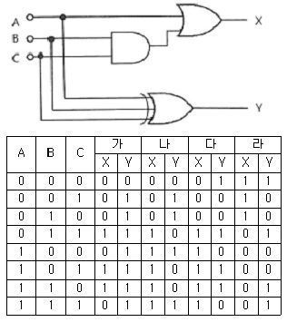
- 가
- 나
- 다
- 라
(정답률: 33%)
48. 다음 R-L 직렬회로에서 전압의 위상을 0°로 할 때 회로의 전류(I) 및 전류 위상(θ)을 올바르게 나열한 것은?
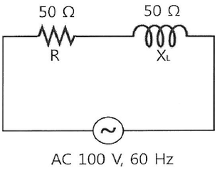
- I=1.5A, θ=-30°
- I=1.4A, θ=-45°
- I=1.3A, θ=-60°
- I=1.2A, θ=-90°
(정답률: 25%)
49. 다음 회로에서 스위치 PB2를 ON시키면 램프가 점등된다. 스위치 PB2를 OFF하여도 램프가 계속 점등상태가 되기 위해서는 어떤 회로를 어느 위치에 연결해야 하는가?
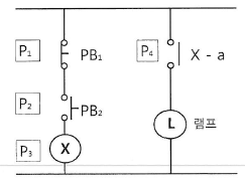
- 자기유지회로를 P1 위치에연결한다.
- 자기유지회로를 P2 위치에연결한다.
- 인터록회로를 P3 위치에연결한다.
- 인터록회로를 P4 위치에연결한다.
(정답률: 39%)
50. 전압 계측기릐 측정범위를 확장하여 더 높은 전압을 측정하기 위한 방법으로 옳은 것은?
- 분류기를 계측기와 병렬로 연결하여 부하에 직렬로 연결한다.
- 분류기를 계측기와 직렬로 연결하여 부하에 병렬로 연결한다.
- 배율기를 계측기와 병렬로 연결하여 부하에 직렬로 연결한다.
- 배율기를 계측기와 직렬로 연결하여 부하에 병렬로 연결한다.
(정답률: 30%)
3과목: 소방관련법령
51. 소방기본법령상 소방본부 화재조사전담부서에 갖추어야 할 장비 및 시설 중 감식∙감정용 기기에 속하지 않은 것은?
- 클램프미터
- 검전기
- 슈미트해머
- 거리측정기
(정답률: 34%)
52. 소방기본법령상 소방대상물에 화재가 발생한 경우, 정단한 사유 없이 소방대가 현장에 도착할 때까지 사람을 구출하는 조치를 하지 않은 관계인에게 처할 수 있는 벌칙으로 옳은것은?
- 100만원이하의 벌금
- 200만원이하의 벌금
- 300만원이하의 벌금
- 400만원이하의 벌금
(정답률: 32%)
53. 소방기본법령상 소방대장이 화재 현장에 소방활동구역을 정하여 출입을 제한하는 경우, 소방활동에 필요한 사람으로서 그 구역에 출입이 가능하지 않은 자는?
- 소방활동구역 안에 있는 소방대상물의 소유자
- 전기 업무에 종사하는 사람으로서 원활한 소방활동을 위하여 필요한 사람
- 구조∙구급업무에 종사하는 사람
- 시∙도지사가 소방활동을 위하여 츨입을 허가한 사람
(정답률: 44%)
54. 소방기본법령상 소방본부의 종합상황실 실장이 소방청의 종합상황실에 보고 하여야 하는 화재가 아닌 것은?
- 사상자가 10인 이상 발생한 화재
- 재산피해액이 30억원 이상 발생한 화재
- 연면적 1만5천제곱미터 이상인 공장에서 발생한 화재
- 항구에 매어둔 총 톤수가 1천톤 이상인 선박에서 발생한 화재
(정답률: 45%)
55. 소방시설공사업법령상 200만원 이하의 과태료 부과대상이 아닌 경우는?
- 소방기술자를 공사 현장에 배치하지 아니한 자
- 감리 관계 서류를 인수∙인계하지 아니한 자
- 방염성능기준 미만으로 방염을한 자
- 감리업자의 보완 요구에 따르지 아니한 자
(정답률: 24%)
56. 소방시설공사업법령상 소방시설업 등록취소와 영업정지 증에 관한 설명으로 옳지 않은 것은?
- 거짓으로 등록한 경우에는 6개월 이내의 기간을 정하여 시정이나 그 영업의 정지를 명할 수 있다.
- 등록을 한 후 정당한 사유 없이 1년이 지날 때까지 영업을 시작하니 아니한 때는 등록을 취소할 수 있다.
- 소방시설업자가 영업정지 기간 중에 소방시설공사등을 한 경우에는 그 등록을 취소하여야 한다.
- 다른 자에게 등록증을 빌려준 경우에는 6개월 이내의 기간을 정하여 그 영업의 정지를 명할 수 있다.
(정답률: 33%)
57. 소방시설공사업법령상 방염처리능력평가액 계산식으로 옳은 것은?
- 방염처리능력평가액 = 실적평가액 + 기술력평가액 + 연평균 방염처리실적액 ± 신인도평가액
- 방염처리능력평가액 = 실적평가액 + 자본금평가액 + 기술력평가액 ± 신인도평가액
- 방염처리능력평가액 = 실적평가액 + 자본금평가액 + 기술력평가액 + 경력평가액 ± 신인도평가액
- 방염처리능력평가액 = 실적평가액 + 자본금평가액 + 연평균 방염처리실적액 ± 신인도평가액
(정답률: 36%)
58. 화재예방, 소방시설 설치∙유지 및 안전관리에 관한 법령상 중앙소방특별조사단의 편성∙운영에 관한 설명으로 옳은 것을 모두 고른 것은?
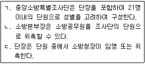
- ㄱ
- ㄱ, ㄷ
- ㄴ, ㄷ
- ㄱ, ㄴ, ㄷ
(정답률: 32%)
59. 화재예방, 소방시설 설치∙유지 및 안전관리에 관한 법령상 건축허가등을 할 때 밀 소방본부장 또는 소방서장의 동의를 받아야 하는 건축물은?
- 층수가 5층인 건축물
- 주차장으로 사용되는 바닥면적이 200제곱미터인 층이 있는 주차시설
- 승강기 등 기계장치에 의한 주차시설로서 자동차 15대를 주차할 수 맀는 시설
- 연면적이 15제곱미터인 장애인 의료재활시설
(정답률: 44%)
60. 화재예방, 소방시설 설치∙유지 및 안전관리에 관한 법령상 벌칙에 관한 설명으로 옳지 않은 것은?
- 소방시설관리업의 등록을 하지 아니라고 영업을 한 자는 2년 이하의 징역 또는 2천만원 이하의 벌금에 처한다.
- 특정소방대상물의 관계인이 소방시설을 유지∙관리할 때 소방시설의 기능과 성능에 지장을 줄 수 있는 폐쇄∙차단 등의 행위를 한 경우 5년 이하의 징역 또는 5천만원 이하의 벌금에 처한다.
- 특정소방대상물의 관계인이 소방시설을 유지∙관리할 때 소방시설의 기능과 성능에 지장을 줄 수 있는 폐쇄∙차단 등의 행위를 하여 사람을 상해에 이르게 한 때에는 7년 이하의 징역 또는 7천만원 이하의 벌금에 처한다.
- 특정소방대상물의 관계인이 소방시설을 유지∙관리할 때 소방시설의 기능과 성능에 지장을 줄 수 있는 폐쇄∙차단 등의 행위를 하여 사람을 사망에 이르게 한 때에는 10년 이하의 징역 또는 1억원 이하의 벌금에 처한다.
(정답률: 46%)
61. 화재예방, 소방시설 설치∙유지 및 안전관리에 관한 법령상 소방시설관리사시험에 응시 할 수 없는 사람은?
- 건축사
- 소방설비산업기사 자격을 취득한 후 3년의 소방실무경력이 있는 사람
- 소방공무원으로 3년 근무한 경력이 있는 사람
- 소방안전 관련 학과의 학사학위를 취득한 후 3년의 소방실무경력이 있는 사람
(정답률: 47%)
62. 화재예방, 소방시설 설치∙유지 및 안전관리에 관한 법령상 특정소방대상물의 관계인이 특정소방대상물의 규모∙용도 및 수용인원 등을 고려하여 갖추어야 하는 소방시설에 관한 설명으로 옳은 것은?
- 아파트등 및 16층 이상 로피스텔의모든 층에는 주거용 주방자동소화장치를 설치하여야 한다.
- 창고시설(물류터미널은 제외한다)로서 바닥면적 합계가 5천제곱미터 이상인 경우에는 모든 층에 스프링클러설비를 설치하여야 한다.
- 기계장치에 의한 주차시설을 이용하여 15대 이상의 차량을 주차할 수 있는 것은 물분무등소화설비를 설치하여야 한다.
- 숙박시설로서 연면적 500제곱미터 이상인 것은 자동화재탐지설비를 설치하여야 한다.
(정답률: 39%)
63. 화재예방, 소방시설 설치∙유지 및 안전관리에 관한 법령상 특정소방대상물에 설치 또는 부착하는 방염대상물품의 방염성능기준으로 옳지 않은 것은? (단, 고시는 제외함)
- 버너의 불꽃을 제거한 때부터 불꽃을 올리며 연소하는 상태가 그칠 때까지 시간은 20초 이내일 것
- 버너의 불꽃을 제거한 때부터 불꽃을 올리지 아니하고 연소하는 상태가 그칠 때까지 시간은 30초 이내일 것
- 탄화한 면적은 50제곱센티미터 이내, 탄화한 길이는 30센티미터 이내일 것
- 불꽃에 의하여 완전히 녹을 때 까지 불꽃의 접촉 횟수는 3회 이상일 것
(정답률: 51%)
64. 화재예방, 소방시설 설치∙유지 및 안전관리에 관한 법령상 소방용품의 품질관리 등에 관한 설명으로 옳지 않은 것은?
- 연구개발 목적으로 제조하거나 수입하는 소방용품은 소방청장의 형식승인을 반다야한다.
- 누구든지 형식승인을 받지 아니한 소방용품을 판매하거나 판매 목적으로 진열하거나 소방시설공사에 사용할 수 없다.
- 소방청장은 제조자 또는 수입자 등의 요청이 있는 경우 소방용움에 대하여 성능인증을 할 수 있다.
- 소방청장은 소방용품의 품질관리를 뤼하여 필요하다고 인정할 때에는 유통 중인 소방용품을 수집하여 검사할 수 있다.
(정답률: 45%)
65. 화재예방, 소방시설 설치∙유지 및 안전관리에 관한 법령상 소방안전관리자를 선임하여야 하는 2급 소방안전관리대상물이 아닌 것은? (단, 「공공기관의 소방안전관리에 관한 규정」을 적용받는 특정소방대상물은 제외함)
- 가연성 가스를 1첨톤 이상 저장 ∙취급하는 시설
- 지하구
- 국보로 지정된 목조건축물
- 가스 제조설비를 갖추고 도시가스사업의 허가를 받아야 하는 시설
(정답률: 38%)
66. 화재예방, 소방시설 설치∙유지 및 안전관리에 관한 법령상 제품검사 전무기관의 지정 등에 관한 설명으로 옳지 않은 것은?
- 소방청장은 제품검사 전문 기관이 거짓으로 지정을 받은 경우 6개월 이내의 기간을 정하여 그 업무의 정지를 명할 수 있다.
- 소방청장은 제품검사 전문 기관이 정당한 사유 없이 1년 이상 계속하여 제품검사 증 지정받은 업무를 수행하지 아니 한 경우 그 지정을 취소할 수 있다.
- 소방청장 또는 시∙도지사는 전문기관의 지정취소 및 업무정지 처분을 하려면 청문을 하여야 한다,
- 전문기관은 재품검사 실시 현황을 소방청장에게 보고하여야 한다.
(정답률: 34%)
67. 화재예방, 소방시설 설치∙유지 및 안전관리에 관한 법령상 소방시설등의 자체 점검 시 점검인력 배치기준 중 작동기능점검에서 점검인력 1단위가 하루 동안 점검할 수 있는 특정소방대상물의 연면적(점검한도 면적) 기준은?
- 5,000제곱미터
- 8,000제곱미터
- 10,000제곱미터
- 12,000제곱미터
(정답률: 49%)
68. 위험물안전관리법령상 자체소방대의 설치 의무가 있는 제4류 위험물을 취급하는 일반취급소는? (단, 지정수량은 3천배 이상임)
- 용기에 위험물을 옮겨 담는 일반취급소
- 보일러 그 밖에 이와 유사한 장치로 위험물을 소비하는 일반취급소
- 이동저장탱크 그 밖에 이와 유사한 것에 위험물을 주입하는 일반취급소
- 세정을 위하여 위험물을 취급하는 일반취급소
(정답률: 37%)
69. 위험물안전관리법령상 1인의 안전관리자를 중복하여 선임할 수 있는 저장소에 해당하지 않는 것은? (단, 저장소는 동일구내에 있고 동일인이 설치함)
- 30개 이하의 옥내저장소
- 30개 이하의 옥외탱크저장소
- 10개 이하의 옥외저장소
- 10개 이하의 암반탱크저장소
(정답률: 40%)
70. 위험물안전관리법령상 시∙도지사가 한국소방산업기술원에 위탁하는 업무에 해당 하지 않은 것은?
- 암반탱크안전성능검사
- 암반탱크저장소의 변경에 따른 완공검사
- 암반탱크저장소의 설치에 따른 완공검사
- 용량이 50만리터 이상인 액체위험물을 저장하는 탱크안전성능검사
(정답률: 38%)
71. 다음은 위험물안전관리법령상 주유취급소 피난설비의 기준에 관한 내용이다. ( )에 들어갈 내용이 옳은 것은?
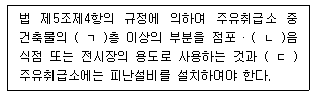
- ㄱ: 2, ㄴ: 일반, ㄷ: 철도
- ㄱ: 2, ㄴ: 휴게, ㄷ: 옥내
- ㄱ: 3, ㄴ: 일반, ㄷ: 철도
- ㄱ: 3, ㄴ: 휴게, ㄷ: 옥내
(정답률: 46%)
72. 다중이용업소의 안전관리에 관한 특별법령상 보험회사가 화재배상책임보험의 보험금 청구를 받은 경우, 지급할 보험금을 결정한 후 피해자에게 며칠 이내에 보험금을 지급하여야 하는가?
- 7일
- 10일
- 14일
- 30일
(정답률: 38%)
73. 다중이용업소의 안전관리에 관한 특별법령상 소방안전교육 강사의 자격 요건으로 옳은 것은?
- 소방 관련학의 학사학위 이상을 가진 자
- 대학에서 소방안전 관련 학과를 졸업하고 소방 관련 기관에서 3년 이상 강의경력이 있는 자
- 소방설비기사 자격을 소지한 소방장 이상의 소방공무원
- 소방설비산업기사 및 위험물기능사 자격을 소지한 자로서 소방 관련 기관에서 3년 이상의 강의경력이 있는 자
(정답률: 32%)
74. 다중이용업소의 안전관리에 관한 특별법령상 화재위험평가대행자가 등록사항을 변경할 때 소방청장에게 등록하여야 하는 중요사항이 아닌 것은?
- 사무소의 소재지
- 등록번호
- 평가대행자의 명칭이나 상호
- 기술인력의 보유 현황
(정답률: 32%)
75. 다중이용업소의 안전관리에 관한 특별법령상 다중이용업주의 안전시설등에 대한 정기점검에 관한 설명으로 옳은 것은?
- 정기적으로 안전시설등을 점검하고 그 점검결과서를 6개월간 보관하여야 한다.
- 다중이용업주는 정기점검을 소방시설관리업자에게 위탁할 수 있다.
- 정기적인 안전점검은 매월 1회 이상 하여야 한다.
- 해당 영업장의 다중이용업주는 정기점검을 직접 수행할 수 있다.
(정답률: 38%)
4과목: 위험물의 성상 및 시설기준
76. 과염소산암모늄과 알루미늄 분말이 반응하여 폭발사고가 발생하였다. 이에 관한 설명으로 옳은 것은?
- 알루미늄은 급격히 환원되어 고온에서 염화알루미늄이 생성된다.
- 과염소산암모늄은 전자를 주는 물질을 발생하여 알루미늄 분말을 환원시키는 반응이다.
- 산화성 물질과 환원성 물질의 반응으로 많은 가스 발생을 수반하는 폭발 반응이다.
- 가연성 산화제와 알루미늄의 급격한 산화∙환원 반응으로 압력이 발화원으로 작용한 것이다.
(정답률: 40%)
77. 위험물안전관리법령상 제2류 위험물 인화성고체로 분류되는 것은?
- 고형알코올
- 마그네슘
- 적린
- 황린
(정답률: 49%)
78. 과산화칼륨이 다량의 물과 완전 반응하여 표준상태(0℃, 1기압)에서 112m3의 산소가 발생하였다면 과산화칼륨의 반응량(kg)은? (단, K2O2 1mol의 분자량은 110g이다.)
- 11
- 110
- 1,100
- 11,100
(정답률: 42%)
79. 위험물안전관리법령상 제3류 위험물의 성상에 관한 설명으로 옳지 않은 것은?
- 트리에틸알루미늄은 상온상압에서 액체이다.
- 금수성물질은 물과 접촉하면 발화∙폭발한다.
- 트리메틸알루미늄은 물보다 가볍다.
- 알킬알루미늄은 물과 반응하여 산소를 발생한다.
(정답률: 46%)
80. 마그네슘에 관한 설명으로 옳은 것을 모두 고른 것은?
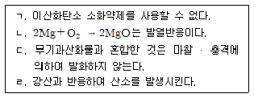
- ㄱ, ㄴ
- ㄱ, ㄷ
- ㄴ, ㄷ
- ㄴ, ㄹ
(정답률: 41%)
81. 질산암모늄에 관한 설명으로 옳지 않은 것은?
- 강환원제이다.
- 질소비료의 원료이다.
- 화약, 폭약의 산소공급제이다.
- 분해폭발하면 다량의 가스가 발생한다.
(정답률: 39%)
82. 위험물안전관리법령상 옥외탱크저장소에서 보유공지를 단축할 수 있는 물분무설비 기준으로 옳은 것은?
- 탱크에 보강링이 설치된 경우에는 보강링이 인접한 바로 위에 분무헤드를 설치한다.
- 탱크표면에 방사하는 물의 양은 탱크의 원주길이 1m에 대하여 분당 37L 이상으로 한다.
- 수원의 양은 15분 이상 방사할 수 있는 수량으로 한다.
- 화재 시 1m2당 10kW 이상의 복사열에 노출되는 포면을 갖는 인접한 옥외저장탱크에 설치한다.
(정답률: 28%)
83. 위험물안전관리법령상 제4류 위험물 중 알코올류에 해당하는 것은?
- C2H4(OH)2
- C3H7OH
- C5H11OH
- C6H5OH
(정답률: 40%)
84. 위험물안전관리법령상 제5류 위험물에 해당하지 않는 것은?
- 니트로벤젠[C6H5NO2]
- 트리니트로페놀[C6H2(NO2)3OH]
- 트리니트로톨루엔[C6H2(NO2)3CH3]
- 니트로글리세린[C3H5(ONO2)3]
(정답률: 48%)
85. 과산화수소(H2O2)에 관한 설명으로 옳지 않은 것은?
- 강산화제이나 환원제로 작용할 때도 있다.
- 60중량퍼센트 이상의 농도에서 가열∙충격 시 단독으로도 폭발한다.
- 석유, 벤젠에 용해되지 않는다.
- 분해시 산소를 발생하므로 안정제로 이산화망간을 사용한다.
(정답률: 29%)
86. 스티렌(C6H5CH=CH2)에 관한 설명으로 옳지 않은 것은?
- 무색∙투명한 액체로서 마취성이 있으며 독성이 매우 강하다.
- 실온에서 인화의 위험이 있으며, 연소 시 폭발성 유기과산화물을 생성한다.
- 산화제와 중합잔응하여 생성된 폴리스티렌수지는 분해폭발성 물질이다.
- 강산성 물질과의 혼촉 시 발열∙발화한다.
(정답률: 24%)
87. 위험물안전관리법령상 암반탱크정장소의 암반탱크 설치기준에서 암반투수계수(m/s) 기준은?
- 1×10-5 이하
- 1×10-6 이하
- 1×10-7 이하
- 1×10-8 이하
(정답률: 31%)
88. 위험물안전관리법령상 옥내저장탱크에 불활성가스를 봉입하여 저장하여야 하는 것은?
- 아세트산에틸
- 아세트알데히드
- 메틸에틸케톤
- 과산화벤조일
(정답률: 41%)
89. 가솔린(휘발유)에 관한 설명으로 옳지 않은 것은?
- 주요성분은 탄소수가 C5~C9의 포화∙불포화 탄화수소 혼합물이다
- 비전도성으로 정전유도현상에 의해 착화∙폭발할 수 있다.
- 유기용제에는 녹지 않으며 유지, 수지 등을 잘 녹인다.
- 액체 상태는 물보다 가볍고, 증기 상태는 공기보다 무겁다.
(정답률: 35%)
90. 탄화칼슘 16kg이 다량의 물과 완전 반응하여 생성되는 수산화칼슘의 질량(kg)은? (단, Ca의 원자량은 40이다.)
- 15.5
- 16.3
- 18.5
- 19.5
(정답률: 27%)
91. 위험물안전관리법령상 옥외저장소에 저장 할 수 있는 것은? (단, 「국제해상위험물 규칙」등 예외규정은 적용하지 않는다.)
- 염소산나트륨
- 과염소산
- 질산메틸
- 황린
(정답률: 31%)
92. 위험물안전관리법령상 염소산칼륨을 1일 1,000kg 생상하고 있는 제조소의 소화기 비치량을 산정하기 위한 총 소요단위는? (단, 제조소의 연면적은 300m2이고, 제조소의 외벽은 내화구조이다.)
- 5
- 6
- 7
- 8
(정답률: 23%)
93. 위험물안전관리법령상 일반취급소 하나의 층에 옥내소화전 3개가 설치되어 있다. 확보해야 할 수원의 최소 양(m3)은?
- 7.8
- 11.7
- 15.6
- 23.4
(정답률: 30%)
94. 위험물안전관리법령상 제조소의 옥외 위험물 취급탱크가 메틸알코올 1m3와 아세톤 0.5m3가 있다. 이를 하나의 방유제 내에 설치하고자 할 때 방유제 기준에 관한 점토사항으로 옳은 것은?
- 방유제 용량은 0.55m3 이상이 되도록 설치하여야 한다.
- 방유제 용량은 1.1m3 이상이 되도록 설치하여야 한다.
- 취급하는 위험물의 성상이 액체이므로 방유제를 설치하지 않아도 된다.
- 위험물 저장탱크의 용량이 지정수량 기준에 미달하여 방유제를 설치하지 않아도 된다.
(정답률: 32%)
95. 위험물안전관리법령상 주유취급소 내 건축물 등의 구조 기준으로 옳지 않은 것은? (단, 단서조항은 적용하지 않는다.)
- 건축물의 벽∙기둥∙바닥∙보 및 지붕을 내화구조 또는 불연재료로 할 수 있다.
- 주거시설 용도로 사용하는 부분은 개구부가 없는 내화구조의 바닥 또는 벽으로 당해 건축물의 다른 부분과 구획하고 주유를 위한 작업장 등 위험물취급장소에 면한 쪽의 벽에는 출입구를 설치할 수 없다.
- 사무실 등의 창 및 출입구에 유리를 사용하는 경우에는 망입유리 또는 강화유리로 하여야 한다.
- 자동차 등의 점검∙정비를 행하는 설비는 고정주유설비로부터 2m 이상, 도로경계선으로부터 1 m 이상 떨어진 장소에 설치하여야 한다.
(정답률: 41%)
96. 위험물안전관리법령상 제조소등에서 “화기엄금” 게시판을 설치하여야 하는 위험물을 모두 고른 것은?
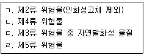
- ㄴ, ㄹ
- ㄱ, ㄴ, ㄷ
- ㄱ, ㄷ, ㄹ
- ㄴ, ㄷ, ㄹ
(정답률: 35%)
97. 위험물안전관리법령상 유별을 달리하는 위험물 상호간 1m 이상의 간격을 두더라도 동일한 옥내저장소에 저장할 수 없는 것은?
- 제1류 위험물과 제6류 위험물
- 제2류 위험물 중 인화성고체와 제4류 위험물
- 제4류 위험물과 제5류 위험물(유기과산화물은 제외)
- 제1류 위험물(알칼리금속의 과산화물은 제외)과 제5류 위험물
(정답률: 24%)
98. 위험물안전관리법령상 제조소 바닥면적이 110m2인 경우 환기설비 중 급기구의 면적 기준으로 옳은 것은?
- 300cm2 이상
- 450cm2 이상
- 600cm2 이상
- 800cm2 이상
(정답률: 32%)
99. 위험물안전관리법령상 일반취급소에 해당하는 것을 모두 고른 것은? (단, 위험물은 지정수량의 배수 이상이다.)
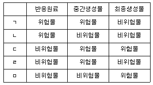
- ㄱ, ㄴ
- ㄱ, ㄴ, ㄹ
- ㄱ, ㄷ, ㄹ
- ㄷ, ㄹ, ㅁ
(정답률: 37%)
100. 위험물안전관리법령상 히드록실아민을 1일 150kg 취급하는 제조소의 최소 안전거리(m)는 약 얼마인가?
- 41
- 50
- 59
- 63
(정답률: 36%)
5과목: 소방시설의 구조원리
101. 누전경보기의 화재안전기준상 설치기준으로 옳지 않은 것은?
- 경계전로의 정격전류가 60A를 초과하는 전로에 있어서는 1급 누전경보기를, 60A 이하의 전로에 있어서는 1급 또는 2급 누전경보기를 설치할 것
- 변류기는 특정소방대상물의 형태, 인입선의 시설방법등에 따라 옥외 인입선의 제1지점의 부하측 또는 제2종 접지선측의 점검이 쉬운 위치에 설치할 것
- 전원은 분전반으로부터 전용회로로 하고, 각 극레 개폐기 및 30A 이하의 과전류차단기(배선용 차단기에 있어서는 20A 이하의 것으로 각 극을 개폐할 수 있는 것)를 설치 할 것
- 변류기를 옥외의 전로에 설치하는 경우에는 옥외형으로 설치할 것
(정답률: 44%)
102. 비상콘센트설비의 화재안전기준상 ( )에 들어갈 기준은?
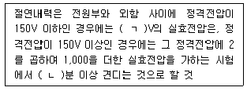
- ㄱ: 500, ㄴ: 1
- ㄱ: 1,000, ㄴ: 1
- ㄱ: 500, ㄴ: 3
- ㄱ: 1,000, ㄴ: 3
(정답률: 43%)
103. 유도등 및 유도표지의 화재안전기준상 피난유도선 설치기준으로 옳은 것은?
- 축광방식의 피난유도선은 바닥으로부터 높이 50㎝ 이하의 위치 또는 바닥 면에 설치할 것
- 축광방식의 피난유도 표시부는 60㎝ 이내의 간격으로 연속되도록 설치할 것
- 광원점등방식의 피난유도 표시부는 바닥으로부터 높이 1.5m 이하의 위치 또는 바닥면에 설치할 것
- 광원점등방식의 피난유도 표시부는 60㎝ 이내의 간격으로 연속되도록 설치하되 실내장식물 등으로 설치가 곤란할 경우 1.5m이내로 설치할 것
(정답률: 41%)
104. 자동화재탐지설비 및 시각경보장치의 화재안전기준상 발신기 설치기준으로 옳지 않은 것은?
- 지하구의 경우에는 발신기를 설치하지 아니할 수 있다.
- 조작이 쉬운 장소에 설치하고, 스위치는 바닥으로부터 0.8m 이상 1.5m 이하의 높이에 설치할 것
- 특정소방대상물의 층마다 설치하되, 해당 특정소방대상물의 각 부분으로부터 하나의 발신기까지 수평거리사 25m 이하가 되도록 할 것. 다만, 복도 또는 별도로 구획된 실로서 보행거리가 40m 이상일 경우에는 추가로 설치하여야 한다.
- 발신기의 위치를 표시하는 표시등은 함의 상부에 설치하되, 그 불빛은 부착면으로부터 10° 이상의 범위 안에서 부착지점으로부터 10m 이내의 어느곳에서도 쉽게 식별할 수 있는 적색등으로 하여야 한다.
(정답률: 53%)
1⑤. 비상방송설비의 화재안전기준상 용어의 정의 및 음향장치에 관한 내용으로 옳지 않은 것은?
- 음량조절기란 가변저항을 이용하여 전류를 변화시켜 음량을 크게 하거나 작게 조절할 수 있는 장치를 말한다.
- 증폭기란 전류량을 늘려 감도를 좋게 하고 미약한 음성전류를 커다란 음성전류로 변화시켜 소리를 크게 하는 장치를 말한다.
- 음량조정기를 설치하는 경우 음량조정기의 배선은 3선식으로 할 것
- 하나의 특정소방대상물에 2이상의 조작부가 설치되어 있는 때에는 각각의 조작부가 있는 장소 상호간에 동시통화가 가능한 설비를 설치할 것
(정답률: 40%)
106. 단상 2선식 220V로 수전하는 곳에 부하전력이 65kW, 역률이 85%, 구내배선의 길이가 100m 일 때 전압강하를 5V까지 허용하는 경우 배선의 최소 굵기 (mm2)는 약 얼마인가?
- 121.46
- 142.89
- 210.36
- 247.49
(정답률: 23%)
107. 서방펌프에 전기를 공급하는 전동기설비가 있을 때 모터의 전부하전류(A)는 약 얼마인가? (단, 전압은 단상 220V, 모터용량은 20kW, 역률은 90%, 효율은 70%이다.)
- 58
- 83
- 101
- 144
(정답률: 27%)
108. P형 1급 수신기와 감지기 사이에 배선회로에서 종단저항은 10kΩ, 배선저항 100Ω 릴레이 저항은 800Ω 이며 회로전압은 24V 일 때, 감지기 동작 시 흐르는 전류(㎃)는 약 얼마인가?
- 11.63
- 12.63
- 23.67
- 26.67
(정답률: 23%)
109. 간이스프링클러설비의 화재안전기준상 급수배관의 설치기준으로 옳지 않은 것은?
- 상수도직경형의 경우에는 수도배관 호칭지름 25mm 이상의 배관이어야 한다.
- 배관과 연결되는 이음쇠 등의 부속품은 물이 고이는 현상을 방지하는 조치를 하여야 한다.
- 급수를 차단할 수 있는 개폐밸브는 개폐표시형으로 하여야 한다.
- 수리계산에 의하는 경우 가지배관의 유석은 6m/s, 그 밖의 배관의 유속은 10m/s를 초과할 수 없다.
(정답률: 40%)
110. 도로터널의 화재안전기준상 옥내소화전설비의 설치기준으로 옳은 것은?
- 소화전함과 방수구는 편도 2차선 이상의 양방향 터널이나 4차로 이상의 일방향 터널의 경우에는 양쪽 측벽에 각각 60m 이내의 간격으로 엇갈리게 설치할 것
- 소화전함에는 옥내소화전 방수구 1개, 15m 이상의 소방호스 2본 이상 및 방수노즐을 비치 할 것
- 가압송수장치는 옥내소화전 2개(4차로 이상의 터널인 경우 3개)를 동시에 사용할 경우 각 옥내소화전의 노즐선단에서의 방수압력은 0.35MPa 이상이고 방수량은 190ℓ/min이상이 되는 성능의 것으로 할 것
- 방수구는 40㎜ 구경의 단구형을 옥내소화전이 설치된 도로의 바닥면으로 부터 1.5m이하의 높이에 설치할 것
(정답률: 35%)
111. 고층건축물의 화재안전기준상 피난안전구역에 설치하는 소방시설 설치기준으로 옳지 않은 것은?
- 피난유도선 설치기준에서 피난유도 표시부의 너비는 최소 25㎜ 이상으로 설치할 것
- 인명구조기구는 피난안전구역이 50층 이상에 설치되어 있을 경우에는 동일한 성능의 예비용기를 5개 이상 비치할 것
- 비상조명등은 상시 조명이 소등한 상태에서 그 비상조명등이 점등되는 경우 각 부분의 바닥에서 조도는 lx 이상이 될 수 있도록 설치 할 것
- 제연설비는 피난안전구역과 비 제연구역간의 차압은 50Pa(옥내에 스프링클러설비가 설치된 경우에는 12.5Pa) 이상으로 하여야 한다.
(정답률: 38%)
112. 소방펌프의 정격유량과 압력이 각각 0.1m3/s 및 0.5MPa일 경우 펌프의 수동력(kW)은 약 얼마인가?
- 30
- 40
- 50
- 60
(정답률: 40%)
113. 지상 40층짜리 아파트에 스프링클러설비가 설치되어 있고 세대별 헤드수가 8개일 때 확보해야할 최소 수원의 양(m3)은? (단, 옥상수조 수원의 양은 고려하지 않는다.)
- 12.8
- 16.0
- 25.6
- 32.0
(정답률: 37%)
114. 옥오 소화전설비의 화재안전기준상 소화전함 설치기준으로 옳지 않은 것은?
- 옥외소화전이 10개 이하 설치된 때에는 옥외소화전마다 5m 이내의 장소에 1개 이상의 소화전함을 설치하여야 한다.
- 옥외소화전이 11개 이상 30개 설치된 때에는 11개 이상의 소화전함을 각각 분산하여 설치하여야 한다.
- 옥외소화전이 31개 이상 설치된 때에는 옥외소화전 2개마다 1개 이상의 소화전함을 설치하여야 한다.
- 가압송수장치의 조작부 또는 그 부근에는 가압송수장치의 기동을 명시하는 적생등을 설치하여야 한다.
(정답률: 48%)
115. 물분무소화설비의 화재안전기준상 수원의 저수량 기준으로 옳은 것은?
- 콘베이어 벨트 등은 벨트부분의 바닥면적 1m2에 대하여 8ℓ/min로 20분간 방수할 수 있는 양 이상으로 할 것
- 차고 또는 주차장은 그 바닥면적 1m2에 애하여 10ℓ/min로 20분간 방수 할 수 있는 양 이상으로 할 것
- 절연유 봉입 변압기는 바닥부분을 제외한 표면적을 합한 면적 1m2에 대하여 8ℓ/min로 20분간 방수 할 수 있는 양 이상으로 할 것
- 케이블트레이, 케이블덕트 등은 투영된 바닥면적 1m2에 대하여 12ℓ/min로 20분간 방수 할 수 있는 양 이상으로 할 것
(정답률: 46%)
116. 지상 11층의 내화구조 건물에서 특별피난계단용 부속실의 급기 가압용 송풍기의 동력(kW)은 약 얼마인가요?
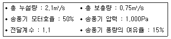
- 1.68
- 7.21
- 16.8
- 72.1
(정답률: 29%)
117. 할로겐화합물 및 불활성기체소화설비의 화재안전기준상 용어의 정의로 옳지 않은 것은?
- “할로겐화합물 및 불활성기체소화약제”란 할로겐화합물(할론 1301, 할론 2402, 할론 1211 제외) 및 불활성기체로서 전기적으로 전도성이며 휘발성이 있거나 증발 후 잔여 물을 남기지 않는 소화약제를 말한다.
- “할로겐화합물 및 불활성기체소화약제”란 불소, 염소, 브롬 또는 요오드 중 하나 이상의 원소를 포함하고 있는 유기화합물을 기본성분으로 하는 소화약재를 말한다.
- “불활성기체소화약제”란 혜륨, 네온, 아르곤 또는 질소가스 중 하나 이상의 원소를 기본 성분으로 하는 소화약제를 말한다
- “충전밀도”란 용기의 단위용적당 소화약제의 중량의 비율을 말한다.
(정답률: 30%)
118. 이산화탄소 소화설비 화재안전기준상 호스릴이산화탄소 소화설비 설치 기준으로 옳지 않은 것은?
- 방호대상물의 각 부분으로부터 하나의 호스접결구까지의 수평거리가 15m 이하가 되도록 할 것
- 노즐은 20℃에서 하나의 노즐마다 50kg/min 이상의 소화약제를 방사할 수 있는 것으로 할 것
- 소화약제 저장용기는 호스릴을 설치하는 장소마다 설치 할 것
- 화재시 현저하게 연기가 찰 우려가 없는 장소로서 지상 1층 및 피난층에 있는 부분으로서 지상에서 수동 또는 원격조작에 따라 개방할 수 있는 개구부의 유효면적의 합계가 바닥면적의 15% 이상이 되는 부분에 설치 할 수 있다.
(정답률: 33%)
119. 피난기구의 화재안전기준이다. ( )에 들어갈 피난기구로 옳은 것은?
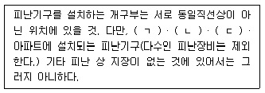
- ㄱ: 구조대, ㄴ: 피난교, ㄷ: 피난용트랩
- ㄱ: 구조대, ㄴ: 피난교, ㄷ: 간이완강기
- ㄱ: 피난교, ㄴ: 피난용트랩, ㄷ: 피난사다리
- ㄱ: 피난교, ㄴ: 피난용트랩, ㄷ: 간이완강기
(정답률: 32%)
120. 연결송수관설비의 화재안전기준상 송수구가 부설된 옥내소화전을 설치한 특정소방대상물 중 방수구를 설치하니 않아도 되는 층은?
- 지하층의 층수가 2 이하인 숙박시설의 지하층
- 지하층의 층수가 2 이하인 창고시설의 지하층
- 지하층의 층수가 2 이하인 관람장의 지하층
- 지하층의 층수가 2 이하인 공장의 지하층
(정답률: 32%)
121. 소방시설의 내진설계 기준상 수평배관 흔들림 방지 버팀대 설치기준으로 옳은 것은?(오류 신고가 접수된 문제입니다. 반드시 정답과 해설을 확인하시기 바랍니다.)
- 황방향 흔들림 방지 버팀대의 설계하중은 설치된 위치의 좌우 5m를 포함한 15m내의 배관에 작용하는 횡방향수평지진하중으로 산정한다.
- 황방향 흔들림 방지 버팀대는 대관구경에 관계없이 모든 주배관, 교차배관에 설치하여야 한다.
- 마지막 버팀대와배관 단부 사이의 거리는 2m를 초과하지 않아야 한다.
- 버팀대의 간격은 중심선 기준으로 최대간격이 15m를 초과하지 않아야 한다.
(정답률: 35%)
122. 특별피난계단의 계단실 및 부속실 제연설비의 화재안전기준상 수직풍도에 따른 배출기준으로 옳지 않은 것은?
- 배출댐퍼는 두께 1.5mm 이상의 강판 또는 이와 동등 이상의 성능이 있는 것으로 설치하여야 하며 비 내식성 재료의 경우에는 부식방지 조치를 할 것
- 수직풍도의 내부면은 두께 0.5mm 이상의 아연도금가유ㅏ나 또는 동등이상의 내식성∙내열성이 있는 것으로 마감되는 접합부에 대하여는 통기성이 없도록 조치할 것
- 화재층의 옥내의 설치된 화재감지기의 동작에 따라 전층의 댐퍼가 개방될 것
- 열기류에 노출되는 송풍기 및 그 부품들은 250℃의 온도에서 1시간 이상 가동상태를 유지할 것
(정답률: 39%)
123. 특별피난계단의 계단실 및 부속실 제연설비의 화재안전기준상 재연구역으로부터 공기가 누설하는 출입문의 틈새면적을 산출하는 기준이다. ( )에 들어갈 값으로 옳은 것은?
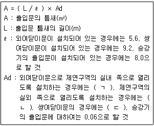
- ㄱ: 0.01, ㄴ: 0.02, ㄷ: 0.03
- ㄱ: 0.02, ㄴ: 0.03, ㄷ: 0.04
- ㄱ: 0.03, ㄴ: 0.04, ㄷ: 0.⑤
- ㄱ: 0.04, ㄴ: 0.⑤, ㄷ: 0.06
(정답률: 48%)
124. 바닥면적이 가로 30m, 세로 20m인 아래의 특정소방대상물에서 소화기구의 능력 단위를 산정한 값으로 옳은 것은? (단, 건축물의 주요 구조부는 내화구조가 아님)
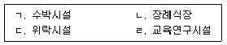
- ㄱ: 6, ㄴ: 12, ㄷ: 20, ㄹ: 3
- ㄱ: 12, ㄴ: 6, ㄷ: 12, ㄹ: 6
- ㄱ: 6, ㄴ: 6, ㄷ: 12, ㄹ: 3
- ㄱ: 12, ㄴ: 12, ㄷ: 20, ㄹ: 6
(정답률: 38%)
125. 내화건축물의 소화용수설비 최소 유효저수량(m3)은? (단, 소수점이하의 수는 1로 본다.)
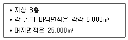
- 60
- 80
- 100
- 120
(정답률: 33%)